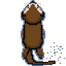
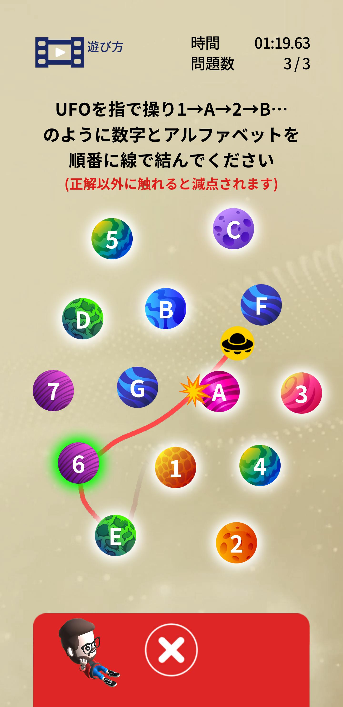

松本惇悠 Matsumoto Atsuyu
東京国際工科専門職大学 工科学部 デジタルエンタテイメント学科
Profile
- 名前
- 松本惇悠
- 所属
- 東京国際工科専門職大学 工科学部 デジタルエンタテイメント学科 4年 ゲームプログラマコース
- 志望職種
- プログラマ
- matsumoto230003@gmail.com
- GitHub
-
https://github.com/Matsumoto0628
Background
大学・学外で培った考え方
在学している大学では、社会課題を解決するための人材を育てるという理念のもと、
さまざまなゲーム制作をチームで行いました。
具体的には、ゲームの操作が難しい方に向けたワンボタンゲームや
ヨガでゲーム依存症を対策するゲームを制作しました。
学外ではバンダイナムコスタジオ、カプコン、マーベラス、ILCAの短期インターンに参加し、
ゲーム制作のノウハウを学びました。
これらの経験から
ゲーム制作は、新しい技術の探求やアイデア出しなど、楽しいことだけではなく、
タイトなスケジュールでのバグ修正、チームとの衝突など、辛いこともあることを学びました。
しかし、それらを乗り越え、作ったゲームでお客様に喜んでいただけることや
作ったツールでチームに貢献できることに、私は大きなやりがいを感じます。
どうしたらお客様に楽しんでいただけるか、どのようにチームに貢献できるかを常に考え、
就職後もお客様にとって価値あるものを創造し、会社の利益に貢献したいと考えています。
Skills
何も見ずにゲームを作ることができ、人に教えられるレベル
調べながらゲーム、ツールを作ることができるレベル
調べながらWebアプリを作ることができ、人に教えられるレベル
Motivation
なぜゲーム業界に行きたいか
理由は3つあります。
1つ目は
自分の生活の中で、
ゲームは「明日も頑張ろう」と元気づけてくれるものだったので、
今度はほかの人をゲームで元気づけたいからです。
2つ目は
試行錯誤してプログラミングの結果が画面に出てくる工程に達成感を感じるからです。
3つ目は
自分の作ったものが周りの人を喜ばせることにやりがいを感じるからです。
家族に昔のゲームを再現して喜んでもらったり、
小学校のイベントで子どもたちに楽しんでもらったり、
自作した開発ツールでチームメンバーに喜んでもらったりしました。
Teamwork
共同制作で大切にしていること
①チームの方向性を合わせること
結束力向上のために、 チームで意見が衝突したときは 方向性を合わせることを大切にしています。 ゲームの共同制作でUIについて 話し合うことがありました。 チーム同士で頭の中でイメージしている レイアウトが伝わらず、意見が衝突しました。 そこで、ゲーム内でプロトタイプを作ることで イメージの共有を行いました。 結果、UIのイメージがしやすくなり、 チームの方向性が合うことで結束力が向上しました。
②チームをサポートすること
作業効率向上のために、作業工程を把握し、 困っているチームメンバーをサポートすることを 大切にしています。 具体的には プログラマーが実装で詰まっているときは ・実装方法の提案 ・既存コードの機能の拡張 を行います。 プランナーがゲームの仕様や バランス調整で迷っているときは ・バランス調整がしやすくなるようなツール開発 ・実装が可能か技術検証 を行います。
Strengths & Weaknesses
長所
提案力
プログラミングスクールのメンターとして、
「どうしたらいいかわからない」という受講生の相談に対して、
調べ方・考え方・アイデアを提案することで、
受講生が自分で問題を解決できるよう支えました。
大学の実習でもこの力を発揮しました。
チーム制作や企業との実習では、
キャラクターの動きやUIのイメージが共有できず
議論が進まない場面で、
プロトタイプを作成して提示することで
具体的なメリット・デメリットを可視化し、
チームや企業担当者との認識合わせに貢献しました。
この提案力を活かして、
ゲーム開発の現場でも課題に対して
具体的なアプローチを示し、
チームの前進に貢献したいと考えています。
短所
飽き性
単純作業や変化の少ない作業が続くと
集中力が途切れやすく、
体力・気力を消耗してしまうことがあります。
対策として、
作業の中に新しい工夫や学びを意識的に取り入れ、
成長や発見を感じられるようにすることで
モチベーションを維持するよう心がけています。
この特性を逆手に取り、
変化の多いゲーム開発の現場では
常に新しい課題に向き合う姿勢を強みとして
活かしていきたいと考えています。
Experience
企業と連携した脳トレアプリ開発
概要
脳トレアプリのミニゲームを1本担当。企業のデザイナーと連携しながら開発を進めた。
動機
アイデア出しから外部のデザイナーとの連携まで、実践的な開発フローを経験できると考えたから。
課題
キャラクターの動きについてイメージが共有できず、ミーティングで方針が決まらなかった。
取り組み
複数の動きのプロトタイプを実装し、それぞれのメリット・デメリットを提示したうえで、最適な案を提案した。
学び
低コストなプロトタイプを活用してメリット・デメリットを可視化することで、説得力のある提案ができることを学んだ。

ワンボタンゲーム制作
概要
小学校と市のイベント（相模原・西落合）でプレイしてもらうために制作したワンボタンテニスゲーム。
動機
プレイの様子からフィードバックを得られると考えたから。
課題
小学生向けに操作を簡単にする必要があったが、ワンボタンでパドルが上下するテニスゲームは操作にコツがいるため、慣れるまでに時間がかかった。
取り組み
ボタンを連打している姿から、ボタンをとりあえず押して操作を確認するという習性を発見した。
そこでスタート前にパドルを操作できるようにし、押したときの挙動を事前に確認できるようにした。
また、操作が苦手な人向けにパドルの長さやボールのスピードを変えられるようにした。
学び
状況から何が必要かを考える経験を活かして、お客様に快適にプレイできるゲームを届けたい。
Javafxを用いたゲーム制作
概要
リモートで東京2名・大阪6名の計8名でゲーム開発を行った。担当はリーダー。言語はJava（JavaFX）。
動機
学外の初対面のメンバーとゲーム開発を経験することで、コミュニケーション力を伸ばせると考えたから。
課題
チームの過度な細分化とリモート環境によるコミュニケーション不足から、マージ作業に大きな時間がかかった。
取り組み
以下の3点を実施した。
・毎日会議室でマージ作業を行いながら質問しやすい環境を整備し、リモートでも円滑に連携できるようにした。
・テキストで「必須・できれば・余裕があれば」の3段階でタスクを共有し、作業の偏りをなくした。
・細分化されたチームを合併し、マージ作業をサブリーダーと分担することで負荷を分散した。
学び
・制作工程を把握し、必要なことをチームで共有することで、手が空くことやコンフリクトを防げることを知った。
・この経験から自分の作業が制作工程のどこに当たるか把握し、問題や疑問があればチームに呼びかけ、開発を円滑に進めて貢献したい。
プログラミングスクールのメンター
概要
小学生から社会人まで幅広い年齢層を対象に、3つのプログラミングスクールでメンターを務めた。
動機
ゲームをチームで制作するにあたってコミュニケーションスキルが必要だと気づき、人に説明する力をつけたいと考えたから。
課題
メンターは受講生に自走する力を身につけさせることがゴールだが、最初の頃は答えを伝えるだけで対応が終わってしまっていた。
取り組み
受講生の状況に合わせた対応を心がけた。
例えばプログラミングのエラーを解決するとき、エラー画面の見方が分からない方にはどのエラーがどの箇所で起きているか確認する方法を伝え、見方が分かる方には解決策を共に調べてどの方法が適しているか一緒に考えた。
相手の理解度に合わせることによって、多くの問題を解決し、受講生の成長をサポートできた。
学び
相手の状況に合わせたコミュニケーションの経験を活かして、ゲーム開発の現場でも異なる職種や立場の人と円滑に連携して、開発に貢献したいと考えている。